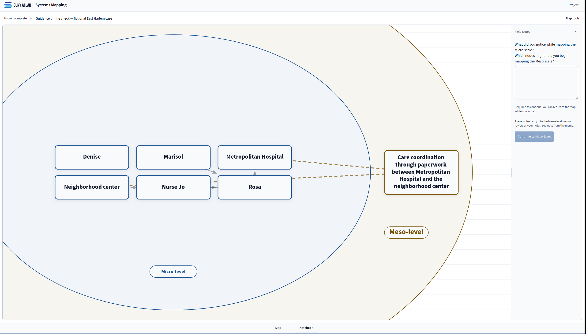

Systems Mapping Documentation
Build a map from a case or fieldwork memo, and show how each claim follows from the evidence.

About Systems Mapping
Systems Mapping helps students follow a focal person through four ecological levels. Students begin at Micro with the people and settings the person encounters directly. They then map connections between those settings at Meso, outside decisions at Exo, and broader conditions at Macro. Each level adds to the same map.
Students start with a memo drawn from field notes, an interview, a case study, or a reading. They choose which items belong on the map and record the evidence behind each choice. Before completing a level, they answer an instructor's Field Notes question. The resulting map records their reasoning through its evidence and revision history.
The tool grew from the Critical AI Literacy T(h)inkering track's work with ecological systems theory and community asset mapping. Students can ask the course model to suggest items from a memo or comment on a map. Students decide what to keep. They can also complete every stage through their own reading and analysis.
Getting Started
Getting Started takes you from a course invitation to a first Micro map. Once you open a project, Workspace Basics explains how the Map and Notebook work together and where to find the level selector and menus.
Build & Interpret
Read The Four Levels to decide where an item belongs and how later levels draw on earlier work. Memo & Suggestions explains how to read a memo with the model and assess its suggestions against the source. The Map covers the canvas, List view, and Map Check.
The map becomes useful for discussion when readers can follow its claims back to a passage. Evidence & Field Notes explains how to separate a source passage from your interpretation and use a question to guide the next level. When you are ready to share that work, Export & Sharing covers project links, exported files, and submitted revisions.
Teach & Review
Instructors need a course in the Lab's admission system to use the teaching controls. Course Access explains how students enter a course and which work instructors can see. Instructor Console covers questions, model guidance, and feedback on submitted revisions.
Teaching Tips suggests ways to discuss placement and assess evidence in class. Sample Activities provides short exercises, while Student Onboarding develops a first-week plan. Use Cases extends those exercises into units and semester plans for a youth-and-families systems course.
Supporting Resources
Check Privacy & Limits before working with fieldwork records or sharing a map. The Lab's Sandbox Docs provides related teaching documentation. Contact AI Lab support for help with access.